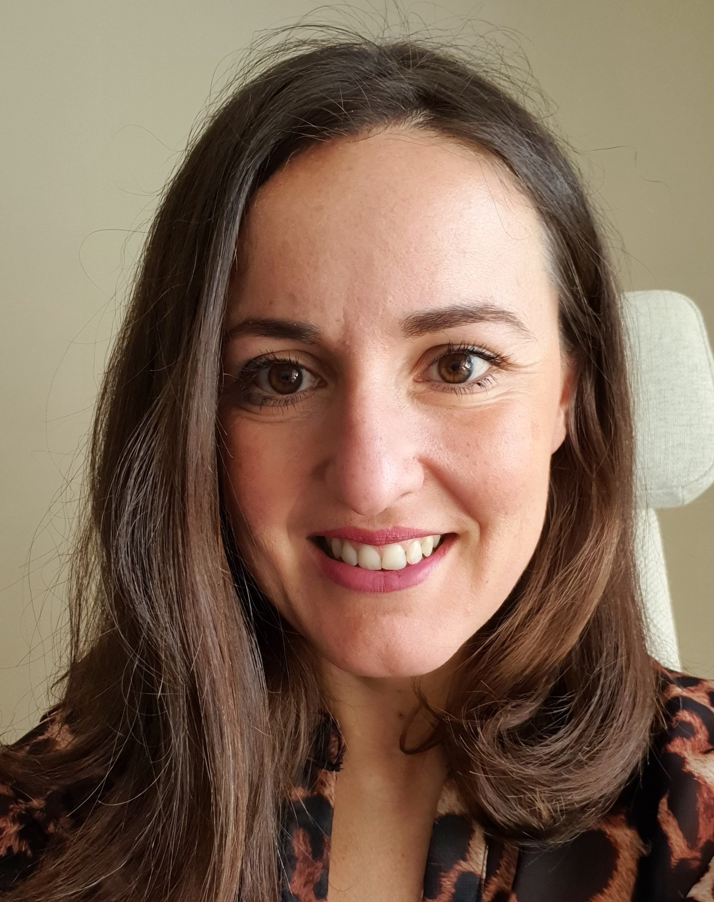

I am Associate Professor at University College Dublin at the School of Computer Science and a funded investigator at Lero - the Irish Software Research Centre. I am also the Director of the UCD MSc in Cybersecurity.
I am part of the SPARE research group.
My research focuses on building adaptive, human-centred security systems that can detect, diagnose, and respond to evolving cyber threats, while preserving human agency and ethical oversight. I also work on ransomware defence and regulatory-compliant software engineering, developing technologies that uphold privacy, safety, and children’s rights.
If you are interested in doing research about secure software engineering and have a passion for making things concrete and not just on paper, drop me a line. Several thesis topics, as well as smaller projects are available around these themes.
News
16/03/2026 JNCA Paper: The paper entitled "MLRan: A behavioural dataset for ransomware analysis and detection" was accepted to the Journal of Network and Computer Applications (IF: 8.0).
06/03/2026 TSE Paper: The paper entitled "Can LLMs Generate User Stories and Assess Their Quality?" was accepted to the IEEE Transactions on Software Engineering (IF: 6.5).
12/12/2025 Computers & Security Paper: The paper entitled "Human-centric security for smart homes: A scoping review." was accepted to the Computers & Security journal (IF: 5.4).
10/09/2025 IEEE Access Paper: The paper entitled "Securing the Weakest Link: Exploring Affective States Exploited in Phishing Emails With Large Language Models." was accepted to the IEEE Access Journal (IF: 3.6).
01/09/2025 TSE Paper: The paper entitled" Diagnosing Unknown Attacks in Smart Homes Using Abductive Reasoning." was accepted to the IEEE Transactions on Software Engineering (IF: 6.5).
13/05/2025 RE Paper: The paper entitled "Exploring the Use of LLMs for Requirements Specification in an IT Consulting Company" was accepted to the 33rd International Conference on Requirements Engineering (CORE: A).
Service
Scientific events I am currently involved in:
ICSE 2027 (General Chair): 49th International Conference on Software Engineering.
RE 2026 (Doctoral Symposium Co-Chair): 24th International Requirements Engineering Conference.
SEAMS 2026 (PC Member): 21st International Conference on Software Engineering for Adaptive and Self-Managing Systems.
FSE 2026 (PC Member): ACM International Conference on the Foundations of Software Engineering.
PhD and Master Students
I am lucky to supervise the following PhD students:
Minh Nguyen, Automating Security Design using Large Language Models, co-supervised with Dr. Alzubair Hassan.
Alkabashi Alnour, Engineering Adaptive Authentication, co-supervised with Dr. Alzubair Hassan and Prof. Bashar Nuseibeh.
Khaled Alkalilli, MetGPT: A Trusted AI Assistant for Personalised Weather Forecasts, co-supervised with Dr. Karl Roe and Padraig Flattery.
Past PhD Students
Faithful Chiagoziem Onweugbuche, "Advancing Ransomware Detection with Machine Learning: Human Factors, Evolution, and Detection". Faithful secured a Research Ireland Industry fellowship and is now a PostDoc at Workday
Kushal Ramkumar, "Engineering Sustainable Adaptive Security by Diagnosis and Mitigating Unknown Attacks in Smart Homes". Kushal is now Senior AI/ML Engineer at DawnGuard.
Ruth Buckley, "Cyber Information Sharing in ISACs". Ruth is Chief Information Officer at Cork City Council.
Konstantinos Ntafloukas, "Cyber Risk Assessment in Critical Transportation Infrastructures". Konstantinos is now R&D Engineer at INLECOM (Greece).
Fanny Rivera-Ortiz, "Engineering Forensic-Ready Software Systems". Fanny is now Post-Doctoral researcher at the National College of Ireland.
Mazen Azzam, "Physics-based Early Warnings for Forensic Readiness in Industrial Control Systems". Mazen is now Optical Sensing Engineer at ASML, The Netherlands.
Faeq Alrimawi, "Software Engineering for Forensic-Ready Cyber-Physical Systems". Faeq is now Assistant Professor at the University of Limerick.